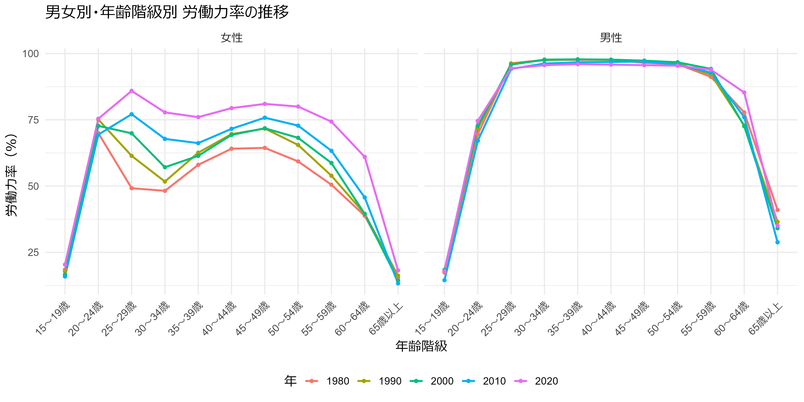
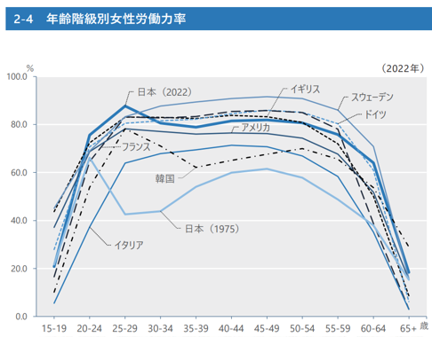
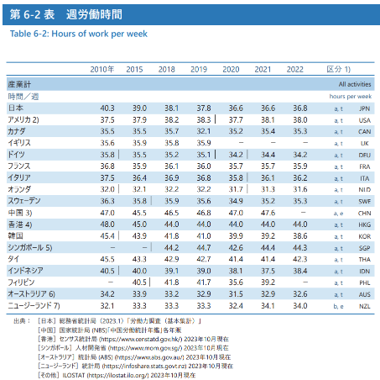
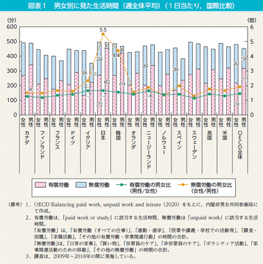

はじめに
本資料は、大森義明・永瀬伸子（2021）『労働経済学をつかむ』有斐閣 を参考に作成しています。 授業目的に合わせて一部構成や表現を調整しています。
労働経済学とは？
労働経済学は、働く人・雇う人・社会の関係を経済学の視点から分析する学問です。 日常に密接に関わるテーマを扱います。
- 労働市場における「需要と供給」「賃金の決定」「雇用の仕組み」「教育や訓練の効果」など
- なぜ正社員と非正規社員がいるのか
- 大学に進学するとどのくらい将来の収入が変わるのか
- 最低賃金を引き上げると雇用はどうなるのか……
このような問いに答えるのが労働経済学です。
この授業では、そういった労働経済学の基礎的な理論を学び、日本の労働市場の特徴を分析していくことを目的とします。
日本の労働市場
まずは、労働市場を理解するための基礎となる統計指標を確認し、それらの指標を国際比較することで、近年の日本の労働市場の実態や特徴を把握していきましょう。
ここで紹介する統計指標は、複合的に分析することで、各国の労働市場の状況について多角的な情報を提供してくれます。
労働市場の重要な指標
労働の構造を示す統計指標
労働力率
労働力率とは、15歳以上人口に占める労働力の割合です。
- 労働力：仕事をしている人（就業者）と仕事についていないが仕事を探していてすぐに仕事に就ける人（完全失業者）を合わせた数
- 国の経済規模や労働市場の市況を表す
- 自営業、家族従業、パート・アルバイト、フルタイム雇用、いずれの場合も労働力に含まれる
年齢階級別労働力率


図から分かること：
- 日本では、女性は育児期に労働力率が落ち込み、育児期の後に再び上昇する（M字型カーブ）。
- 最近になるにつれてM字型カーブの底は浅くなっている。
- 他の多くの国ではM字型から高原型に変わってきた。
- 韓国は依然M字型。
- 女性の労働力率が最も高いのはスウェーデン。
こうした労働力率のカーブの形状は、それぞれの国の育児休業制度や政府補助のある保育園の整備など、女性の就業を支援するための政策の有無によって影響を受けます。
| 国名 | 育児休業制度 | 子育て支援制度 | 参考 |
|---|---|---|---|
| スウェーデン | 両親それぞれに240日ずつ付与され、賃金の80％が補填される。 | 自治体は保育所への入所を希望する1歳以上の子どもに就学前保育の場を提供する義務を負う。16歳未満のすべての子どもに児童手当（所得制限なし）を支給。 | スウェーデンにおける仕事と育児の両立支援施策の現状（JILPT, 2018） |
| アメリカ | 連邦法では、従業員50人以上の企業に勤務する母親に対して、年間12週間の無給休暇の取得が認められている。有給休業制度については、居住する州や勤務先の企業によって導入状況に大きな差がある。 | 貧困家庭を対象とした扶養控除、児童税額控除などに留まる。 | アメリカにおける仕事と育児の両立支援に関する諸政策（JILPT, 2018） |
| 日本 | 子が1歳に達するまで育児休業の権利を保障する。 | 年齢や所得に応じた給付金、児童手当などと支給。所得に応じた就学費用の援助や医療費助成制度などもある。 | 育児休業特設サイト（厚生労働省） よくわかる「子ども・子育て支援新制度」（こども家庭庁） |
確認クイズ：
なぜ日本の女性の労働力率はM字型になるのでしょうか？また、その形状は近年どう変化していますか？
労働時間
労働時間は、1週間の平均労働時間、1日の平均労働時間という形で示されることが多いです。週労働時間を国際比較してみましょう。

表から分かること：
- 日本では、最近になるにつれて労働時間が短くなっている傾向にある。
- ヨーロッパでは比較的労働時間が短く、アジアは比較的労働時間が長い傾向にある。
- 一番長く働いているのはシンガポール、一番短いのはオランダ
次に、男女別に週当たりの有償労働時間と無償労働時間の分布を見てみましょう。有償労働は、すべての仕事、通勤・通学、学校での生活時間などを含む、有償労働・学業関連行動の時間を合計です。無償労働は、家事や育児、介護など、有償労働以外のすべての労働時間の合計です。

単純な週労働時間の表と見比べると、少し数字の見方が変わるかもしれません。
- どの国においても有償労働時間は男性の方が長く、無償労働は女性の方が長い。
- 有償労働の男女比（女性を1とした場合の男性の倍率）が大きいのは、1.7倍の日本、イタリア、1.6倍のニュージーランド。
- 無償労働の男女比（男性を1とした場合の女性の比率）が大きいのは、5.5倍の日本、4.4倍の韓国、2.3倍のイタリア。
- 有償労働・無償労働ともに男女比が小さいのは、フィンランドとスウェーデンで、その比率はほとんど1に近い
このように、週労働時間だけでなく、無償労働時間も加味すると、国ごとの違いが見えてきます。
どの国でも女性の無償労働の時間が長いのは、有償労働を減らして家事や育児に時間を割く傾向があると考えられます。このとき、日本や韓国などでは、女性が労働時間を減らす、あるいは離職する一方で、男性が労働時間を増やすことで、家庭内で役割分担が行われている様子がうかがえます。
一方、フィンランドやスウェーデンなど夫婦共働き世帯が多い国では、子どもが生まれた後には男女ともに労働時間を減らし、育児時間を増やす傾向があります。家庭内で育児と労働を分担する形がとられるのです。
確認クイズ：
日本や韓国など、無償労働の男女比が大きい国では、どのような家庭内の役割分担が行われていると考えられますか？
賃金率
賃金率は、単位時間当たりの給与（労働所得）であり、給与を労働時間で割ることで得られます。
基本的には単位時間あたりに生み出した価値の代理変数だと考えられるので、生産性を示す指標だと解釈することができます。
日本の場合、
- 正規労働者（正社員）は月給のことが多い
- 所定内給与（決まって支給される給与）として、基本給、職務手当、役職手当など
- 企業によっては精勤・皆勤手当、通勤手当、家族手当等の手当てもあらかじめ労働契約によって決められていることも
- 超過労働給与として、時間外勤務手当、深夜勤務手当、休日出勤手当、宿日当手当、交代勤務手当など
- 年2回程度賞与が出ることが多い
- 所定内給与（決まって支給される給与）として、基本給、職務手当、役職手当など
- パート・アルバイトは時給や日給のことが多い
日本の男女・正規非正規別賃金率

図から分かること
- 男性正社員の賃金率は年齢とともに大きい山型を描く
- 比較すると女性正社員の山は低い
- 非正社員は男女とも年齢による変化はほとんどない
- フルタイムか短時間かはあまり関係ない
賃金率が生産性の代理変数であるなら、正社員の男女間、正社員と非正社員間で生産性が大きく異なるということを示しますが、これほど大きい生産性の差が本当にあるのでしょうか？
もし生産性の差があるとして、それは人材育成の差なのでしょうか？
個人が各自が望む働き方ができている結果だと言えるのでしょうか？
非正社員の個人の能力は十分に生かせているのでしょうか？
実は、日本の男女間や正規非正規間の賃金格差は、国際的に見て大きいです。例えば、アメリカと比較したフルタイム労働者の男女賃金格差は以下のようになっています。

※ここで、賃金格差は女の中位所得の差を男性中位所得で除した数値のことを指します。
こうした違いはなぜ生まれるのでしょうか？
以降の章で関連する話にも触れていきます。
確認クイズ：
非正社員と正社員、男女間で賃金率に大きな差が見られるのはなぜでしょうか？あなたの考えを自由に述べてください。
日本の労働統計
日本の労働の状況を把握するために、政府は様々な統計をとっています。それらをまとめたものが白書になっているので、ぜひ一度読んでみてください。
- 『労働経済白書』（厚生労働省）
- 賃金、労働時間、労働生産性、地域の雇用状況、人材マネジメントなど
- 『働く女性の実情』（厚生労働省）
- 『男女共同参画白書』（内閣府男女共同参画局）
- 男女の労働参加、仕事と家庭の両立の状況、政治参加など
日本で一番大規模な統計は国勢調査です。5年に1度日本に住むすべての人を対象に、世帯状況や就業状態、仕事の種類などを調査しています（参考：令和2年国勢調査の概要）。
国民全員を調査しているため、最も詳細にデータを得ることができますが、その分、コストと時間がかかるというデメリットもあります。
そこで、より頻繁に現状を把握するために、1年に1回、あるいは毎月実施される標本調査もあります。
こうした標本調査では、母集団をいくつかの層に分け、それぞれの層から適切な割合で無作為に抽出された標本に基づいて実施されます。これにより、コストと時間を抑えつつ、国全体を代表するデータを得ることが可能になります。
以下で代表的な労働統計を紹介します。
| 調査名 | 頻度 | 実施当局 | 調査対象 | 対象者数・事業所数 | 特徴 |
|---|---|---|---|---|---|
| 労働力調査 | 毎月 | 総務省統計局 | 世帯 | 約4万世帯 （約10万人） |
月末1週間の就業状態を調査。失業率の推計に使用。 失業者：月末1週間に就業しておらず、仕事を探していて、すぐ働ける人。 |
| 就業構造基本調査 | 5年に1回 | 総務省統計局 | 世帯 | 約52万世帯 （約108万人） |
就業状態、労働時間、年収等に関する大規模調査。 より詳細な地域別・属性別分析が可能。 |
| 賃金構造基本統計調査 | 毎年 | 厚生労働省 | 5人以上の常用雇用者のいる事業所 | 約6万5000事業所 | 企業の賃金台帳に基づく正確な給与・賞与データが得られる。 労働者の賃金構造を詳細に把握可能。 |
日本の場合、ここで挙げた世帯への調査、企業への調査それぞれの特徴は以下のようにまとめることができます。
世帯への調査
- 小規模事業所勤務者を含めて広く働く人をとらえることができる。
- 賃金は「200万から299万」といった階級値でしか知ることができない場合が多い。
- 例外は、厚生労働省「国民生活基礎調査」、総務省統計局「全国消費実態調査」、厚生労働省「21世紀成年者縦断調査」など
企業への調査
- 給料や労働時間数などを正確に把握できる。
- 失業者や無業者についてはもちろん、小規模事業所勤務者や自営業者等へは調査がされていない。
確認クイズ：
「正社員と非正社員の賃金の違いを、できるだけ正確な金額で把握したい」と思ったとき、どの統計調査を使えばよいでしょうか？また、その理由を説明してください。
労働統計の利用
近年、これらの統計の結果概要は誰でも簡単にアクセスできるようになりました。
日本の政府統計は、過去のものも含めて、総務省の政府統計の総合窓口（e-Stat）で参照することができます。
データはExcelファイルで提供されているので、自分で目的に合わせた表やグラフを作ったり、必要な数値を計算したりすることもできます。
また、OECDのデータベースでは、各国の統計データをもとに、関心のある項目を自由に選んで集計表を作ることができます。
英語サイトなので読みづらいかもしれませんが、直感的に操作できるように設計されているので、一度試してみてください。
最近はChatGPTなどの生成AIの進歩により、統計ソフトを扱うハードルも下がってきています。すでに加工されたデータを眺めるよりも、自分自身で生データを扱ってみることで、得られる情報量や理解の深さは大きく広がります。難しく考えず、まずは興味のあるテーマから。ぜひ自分の目でデータを確かめ、世の中を観察するきっかけにしてみてください。
Tips
ここで、統計調査について知っておくと便利な知識をまとめておきます。
調査分析の方法
調査は、その特徴により複数の種類に分けられます。
| 分析の種類 | データの特徴 | 主な用途 | 留意点 |
|---|---|---|---|
| 横断面分析 （クロスセクションデータ） |
複数の調査対象について、ある1時点で調査を実施 | 地域ごとの差異、性別や年齢階級による違いを分析する | 単一時点の情報に限られるため、時間的な変化は捉えられない |
| 時系列分析 | 同じ対象を複数時点にわたって調査 | 時間を通じた傾向や変化を分析する | 同じ対象を継続的に調査する必要がある |
| パネル分析 | 複数の調査対象について、複数時点で繰り返し調査を実施 | 地域や属性による変化の追跡、同一個体の変化の分析などに有効 | 時間とともに特定の傾向を持つ対象が脱落しやすく、母集団との乖離が生じる可能性がある |
統計における働き方の分類

労働力調査や就業構造基本調査などの統計調査において、働き方は図のように分類されています。
このような分類方法になったのは、1980年代に主婦層にパートと呼ばれる働き方が広まり、1990年代から2000年代にかけて未婚者層や高齢者層、男性にもパート・アルバイトといった働き方が拡大し、2000年代初頭の規制緩和のなかで派遣労働者や契約労働者といった働き方も増え、正規の職員・従業員と違う分類として注目されるようになったという経緯があります。
日本では、伝統的に雇用者の呼称による賃金格差が大きいことが示されてきました。正社員とパート、あるいは短時間正社員とパートでは賃金格差が大きく、パート雇用者の中で有期雇用者と無期雇用者の賃金格差はほとんどありません。
一方海外では、有期雇用か無期雇用かが賃金を決める重要な変数であるとする研究が多くあります。
ここまで、男女の年齢階級別賃金率や労働力率、労働時間に関して、国際比較をしながら日本を見てきました。
そのなかで、例えば労働時間の男女比率などは各国間でかなり差があることが分かります。このような国ごとの差は何から生じているのでしょうか？文化や制度の違い、教育や保育の仕組み、企業の慣行、社会の価値観など、さまざまな要因が考えられます。
これから取り上げるのは、労働者個人の行動（働く・働かない、何時間働くか）、企業側の需要、賃金と仕事経験の関係、労働市場のミスマッチや失業が生じる仕組みなどです。 労働経済学の理論を学ぶことで、実際に世の中で起きている現象をより深く理解できるようになります。
みなさん自身も、今後、働き方や雇用に関する大きな変化に直面することがあるかもしれません。 たとえばコロナ禍では、突然の需要減により多くの人が職を失い、テレワークや副業など新しい働き方が広まりました。 また、少子高齢化やAIの進化といった長期的な変化も、今後の労働市場に大きな影響を及ぼしていくでしょう。
労働経済学の理論は、こうした変化の中で「なぜそうなるのか」「これからどうなるのか」を考えるための手がかりになります。 単なる知識としてではなく、自分のキャリアや生き方を考えるうえでのヒントとして、ぜひ活用してみてください。
確認クイズ：
次の文の空欄を埋めてください。
日本の女性の労働力率は、 期に低下し、その後再び上昇する、いわゆる「 カーブ」を描きます。